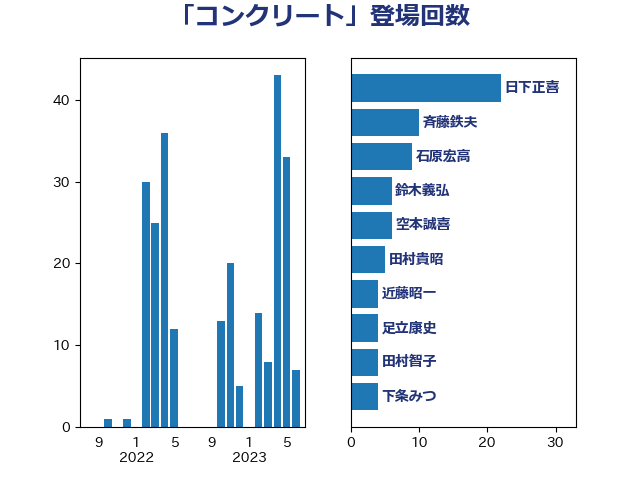

単語「コンクリート」

| 日下正喜 | 公明党 | 22 回 |
| 斉藤鉄夫 | 公明党 | 10 回 |
| 石原宏高 | 自由民主党 | 9 回 |
| 鈴木義弘 | 国民民主党 | 6 回 |
| 空本誠喜 | 日本維新の会 | 6 回 |
| 田村貴昭 | 日本共産党 | 5 回 |
| 近藤昭一 | 立憲民主党 | 4 回 |
| 足立康史 | 日本維新の会 | 4 回 |
| 田村智子 | 日本共産党 | 4 回 |
| 下条みつ | 立憲民主党 | 4 回 |
| たがや亮 | れいわ新選組 | 4 回 |
| 西村康稔 | 自由民主党 | 3 回 |
| 荒井優 | 立憲民主党 | 3 回 |
| 羽田次郎 | 立憲民主党 | 3 回 |
| 福島伸享 | 無所属 | 3 回 |
| 嘉田由紀子 | 無所属 | 3 回 |
| 伊波洋一 | 無所属 | 3 回 |
| 阿部知子 | 立憲民主党 | 2 回 |
| 長友慎治 | 国民民主党 | 2 回 |
| 鎌田さゆり | 立憲民主党 | 2 回 |
| 野間健 | 立憲民主党 | 2 回 |
| 野村哲郎 | 自由民主党 | 2 回 |
| 紙智子 | 日本共産党 | 2 回 |
| 篠原孝 | 立憲民主党 | 2 回 |
| 笠井亮 | 日本共産党 | 2 回 |
| 竹内真二 | 公明党 | 2 回 |
| 田島麻衣子 | 立憲民主党 | 2 回 |
| 山本剛正 | 日本維新の会 | 2 回 |
| 山崎誠 | 立憲民主党 | 2 回 |
| 堀場幸子 | 日本維新の会 | 2 回 |
| 伴野豊 | 立憲民主党 | 2 回 |
| 中野洋昌 | 公明党 | 2 回 |
| 三木圭恵 | 日本維新の会 | 2 回 |
| 鬼木誠 | 立憲民主党 | 1 回 |
| 高橋英明 | 日本維新の会 | 1 回 |
| 馬淵澄夫 | 立憲民主党 | 1 回 |
| 馬場雄基 | 立憲民主党 | 1 回 |
| 鈴木敦 | 国民民主党 | 1 回 |
| 進藤金日子 | 自由民主党 | 1 回 |
| 辻元清美 | 立憲民主党 | 1 回 |
| 足立敏之 | 自由民主党 | 1 回 |
| 越智俊之 | 自由民主党 | 1 回 |
| 赤嶺政賢 | 日本共産党 | 1 回 |
| 若松謙維 | 公明党 | 1 回 |
| 芳賀道也 | 国民民主党 | 1 回 |
| 舟山康江 | 国民民主党 | 1 回 |
| 緑川貴士 | 立憲民主党 | 1 回 |
| 細田健一 | 自由民主党 | 1 回 |
| 竹詰仁 | 国民民主党 | 1 回 |
| 石川博崇 | 公明党 | 1 回 |
| 石井苗子 | 日本維新の会 | 1 回 |
| 猪瀬直樹 | 日本維新の会 | 1 回 |
| 瀬戸隆一 | 自由民主党 | 1 回 |
| 浜野喜史 | 国民民主党 | 1 回 |
| 津島淳 | 自由民主党 | 1 回 |
| 河西宏一 | 公明党 | 1 回 |
| 永岡桂子 | 自由民主党 | 1 回 |
| 横沢高徳 | 立憲民主党 | 1 回 |
| 森田俊和 | 立憲民主党 | 1 回 |
| 森山浩行 | 立憲民主党 | 1 回 |
| 梅谷守 | 立憲民主党 | 1 回 |
| 松野博一 | 自由民主党 | 1 回 |
| 杉本和巳 | 日本維新の会 | 1 回 |
| 新妻秀規 | 公明党 | 1 回 |
| 庄子賢一 | 公明党 | 1 回 |
| 平沼正二郎 | 自由民主党 | 1 回 |
| 岸田文雄 | 自由民主党 | 1 回 |
| 山田勝彦 | 立憲民主党 | 1 回 |
| 山添拓 | 日本共産党 | 1 回 |
| 寺田静 | 無所属 | 1 回 |
| 塩田博昭 | 公明党 | 1 回 |
| 古川元久 | 国民民主党 | 1 回 |
| 北神圭朗 | 無所属 | 1 回 |
| 伊東信久 | 日本維新の会 | 1 回 |
| 三浦靖 | 自由民主党 | 1 回 |